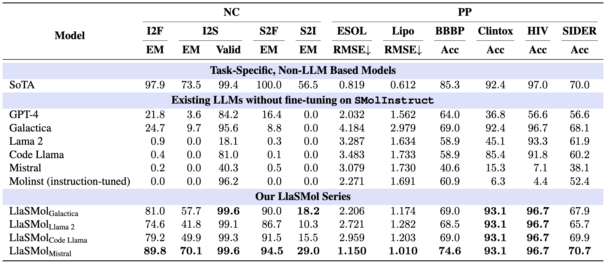
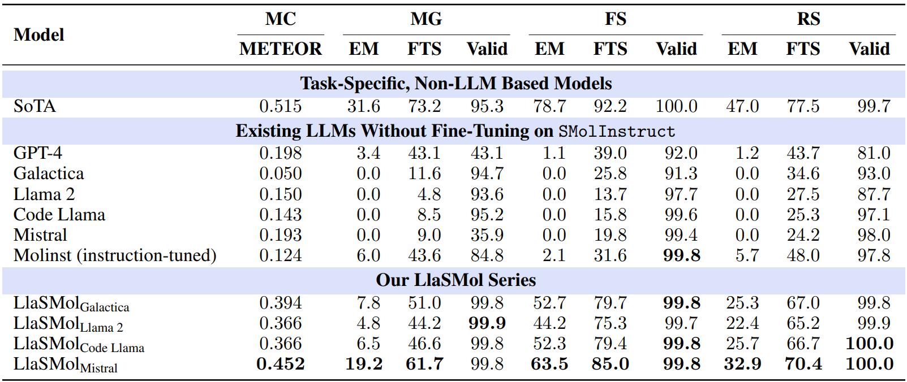

Chemistry plays a crucial role in many domains, such as drug discovery and material science. While large language models (LLMs) such as GPT-4 exhibit remarkable capabilities on natural language processing tasks, existing work shows their performance on chemistry tasks is discouragingly low. In this paper, however, we demonstrate that our developed LLMs can achieve very strong results on a comprehensive set of chemistry tasks, outperforming the most advanced GPT-4 across all the tasks by a substantial margin (e.g., 94.5% exact match for converting SMILES to Formula vs. GPT-4's 16.4%; 32.9% exact match for Retrosynthesis vs. GPT-4's 1.2%) and approaching the SoTA task-specific models. The key to our success is a large-scale, comprehensive, high-quality dataset for instruction tuning named SMolInstruct. It contains 14 meticulously selected chemistry tasks and over three million high-quality samples, laying a solid foundation for training and evaluating LLMs for chemistry. Based on SMolInstruct, we fine-tune a set of open-source LLMs, among which, we find that Mistral serves as the best base model for chemistry tasks. We further conduct analysis on the impact of trainable parameters, providing insights for future research.
The merits of SMolInstruct:
(1) Large-Scale. SMolInstruct consists of 3.4M distinct samples and 1.6M distinct molecules, with a diverse range of sizes, structures, and properties, showcasing an extensive coverage of diverse chemical knowledge.
(2) Comprehensive. SMolInstruct contains 4 types of chemical tasks (14 tasks in total), emerging as the most comprehensive instruction tuning dataset for small molecules. Notably, the tasks are meticulously selected to build a strong chemistry foundation.
(3) High-Quality. Rigorous processing steps have been implemented to exclude problematic and low- quality samples. Along with careful data splitting and canonicalization of SMILES representations SMolInstruct stands as a high-quality resource valuable for future research.
LlaSMol (large language models for small molecules) is a series of LLMs built for conducting various chemistry tasks. Specifically, we use Galactica, Llama 2, Code Llama, and Mistral as the base models, and conduct instruction tuning with LoRA on our SMolInstruct dataset. The resulting models are named as LlaSMolGalactica, LlaSMolLlama 2, LlaSMolCode Llama, LlaSMolMistral, respectively.
We comprehensively compare our LlasMol models with existing LLMs as well as the task-specific, non-LLM based SoTA models. The main results are shown in the following tables.
Results for name conversion (NC) and property prediction (PP) tasks. The metrics include exact match (EM), validity (Valid), root mean square error (RMSE), and accuracy (Acc), where EM and Valid are in percentage.
Results for molecule captioning (MC), molecule generation (MG), forward synthesis (FS), and retrosynthesis (RS). The metrics include METEOR score (METEOR), exact match (EM), Morgan fingerprint-based tanimoto similarity (FTS), and validity (Valid), where EM, FTS, and Valid are in percentage.
Main takeaways:
(1) LlaSMol models significantly outperform the existing LLMs on all the tasks, underscoring the effectiveness of the proposed SMolInstruct dataset and the benefits of fine- tuning.
(2) Our four LlaSMol models show substantial differences in their performance, and LlasMolMistral achieves the best, emphasizing the significant impact of base models on downstream tasks
(3) Our LlaSMol models exhibit comparable performance to SoTA models even with only a small proportion of parameters being tuned (40M, 0.59%), showing great potential to surpass task-specific models and work as universal models capable of addressing multiple chemistry tasks.
If our paper or related resources prove valuable to your research, we kindly ask for citation. Please feel free to contact us with any inquiries.
@article{yu2024llasmol,
title={LlaSMol: Advancing Large Language Models for Chemistry with a Large-Scale, Comprehensive, High-Quality Instruction Tuning Dataset},
author={Botao Yu and Frazier N. Baker and Ziqi Chen and Xia Ning and Huan Sun},
journal={arXiv preprint arXiv:2402.XXXX},
year={2024}
}